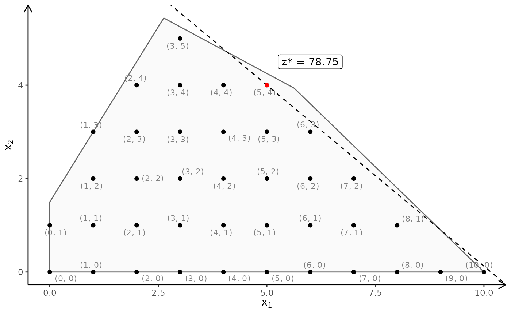
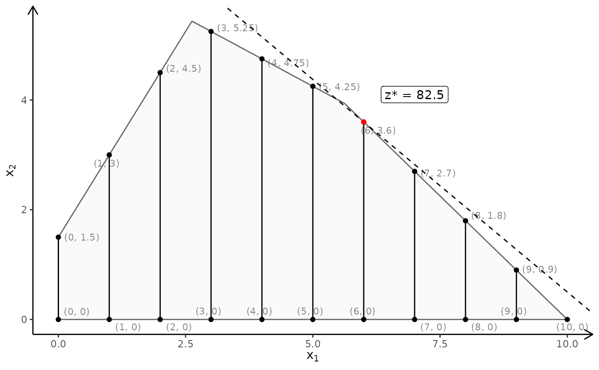

Plot the polytope (bounded convex set) of a linear mathematical program
Source:R/plot.R
plotPolytope.RdPlot the polytope (bounded convex set) of a linear mathematical program
plotPolytope( A, b, obj = NULL, type = rep("c", ncol(A)), nonneg = rep(TRUE, ncol(A)), crit = "max", faces = type, plotFaces = TRUE, plotFeasible = TRUE, plotOptimum = FALSE, latex = FALSE, labels = NULL, ... )
Arguments
| A | The constraint matrix. |
|---|---|
| b | Right hand side. |
| obj | A vector with objective coefficients. |
| type | A character vector of same length as number of variables. If entry k is 'i' variable \(k\) must be integer and if 'c' continuous. |
| nonneg | A boolean vector of same length as number of variables. If entry k is TRUE then variable k must be non-negative. |
| crit | Either max or min (only used if add the iso profit line) |
| faces | A character vector of same length as number of variables. If entry k is 'i' variable \(k\) must be integer and if 'c' continuous. Useful if e.g. want to show the linear relaxation of an IP. |
| plotFaces | If |
| plotFeasible | If |
| plotOptimum | Show the optimum corner solution point (if alternative solutions only one is shown) and add the iso profit line. |
| latex | If |
| labels | If |
| ... | If 2D, further arguments passed on the the ggplot plotting functions. This must be done as lists. Currently the following arguments are supported:
If 3D further arguments passed on the the RGL plotting functions. This must be done as lists. Currently the following arguments are supported:
|
Value
If 2D a ggplot2 object. If 3D a RGL window with the 3D plot.
Note
The feasible region defined by the constraints must be bounded (i.e. no extreme rays) otherwise you may see strange results.
Author
Lars Relund lars@relund.dk
Examples
#### 2D examples #### # Define the model max/min coeff*x st. Ax<=b, x>=0 A <- matrix(c(-3,2,2,4,9,10), ncol = 2, byrow = TRUE) b <- c(3,27,90) obj <- c(7.75, 10) ## LP model # The polytope with the corner points plotPolytope( A, b, obj, type = rep("c", ncol(A)), crit = "max", faces = rep("c", ncol(A)), plotFaces = TRUE, plotFeasible = TRUE, plotOptimum = FALSE, labels = NULL, argsFaces = list(argsGeom_polygon = list(fill = "red")) )# With optimum and labels: plotPolytope( A, b, obj, type = rep("c", ncol(A)), crit = "max", faces = rep("c", ncol(A)), plotFaces = TRUE, plotFeasible = TRUE, plotOptimum = TRUE, labels = "coord", argsOptimum = list(lty="solid") )# Minimize: plotPolytope( A, b, obj, type = rep("c", ncol(A)), crit = "min", faces = rep("c", ncol(A)), plotFaces = TRUE, plotFeasible = TRUE, plotOptimum = TRUE, labels = "n" )# Note return a ggplot so can e.g. add other labels on e.g. the axes: p <- plotPolytope( A, b, obj, type = rep("c", ncol(A)), crit = "max", faces = rep("c", ncol(A)), plotFaces = TRUE, plotFeasible = TRUE, plotOptimum = TRUE, labels = "coord" ) p + ggplot2::xlab("x") + ggplot2::ylab("y")# More examples # \donttest{ ## LP-model with no non-negativity constraints A <- matrix(c(-3, 2, 2, 4, 9, 10, 1, -2), ncol = 2, byrow = TRUE) b <- c(3, 27, 90, 2) obj <- c(7.75, 10) plotPolytope( A, b, obj, type = rep("c", ncol(A)), nonneg = rep(FALSE, ncol(A)), crit = "max", faces = rep("c", ncol(A)), plotFaces = TRUE, plotFeasible = TRUE, plotOptimum = FALSE, labels = NULL )## The package don't plot feasible regions that are unbounded e.g if we drop the 2 and 3 constraint A <- matrix(c(-3,2), ncol = 2, byrow = TRUE) b <- c(3) obj <- c(7.75, 10) # Wrong plot plotPolytope( A, b, obj, type = rep("c", ncol(A)), crit = "max", faces = rep("c", ncol(A)), plotFaces = TRUE, plotFeasible = TRUE, plotOptimum = FALSE, labels = NULL )# One solution is to add a bounding box and check if the bounding box is binding A <- rbind(A, c(1,0), c(0,1)) b <- c(b, 10, 10) plotPolytope( A, b, obj, type = rep("c", ncol(A)), crit = "max", faces = rep("c", ncol(A)), plotFaces = TRUE, plotFeasible = TRUE, plotOptimum = FALSE, labels = NULL )## ILP model A <- matrix(c(-3,2,2,4,9,10), ncol = 2, byrow = TRUE) b <- c(3,27,90) obj <- c(7.75, 10) # ILP model with LP faces: plotPolytope( A, b, obj, type = rep("i", ncol(A)), crit = "max", faces = rep("c", ncol(A)), plotFaces = TRUE, plotFeasible = TRUE, plotOptimum = TRUE, labels = "coord", argsLabels = list(size = 4, color = "blue"), argsFeasible = list(color = "red", size = 3) )#ILP model with IP faces: plotPolytope( A, b, obj, type = rep("i", ncol(A)), crit = "max", faces = rep("i", ncol(A)), plotFaces = TRUE, plotFeasible = TRUE, plotOptimum = TRUE, labels = "coord" )## MILP model A <- matrix(c(-3,2,2,4,9,10), ncol = 2, byrow = TRUE) b <- c(3,27,90) obj <- c(7.75, 10) # Second coordinate integer plotPolytope( A, b, obj, type = c("c", "i"), crit = "max", faces = c("c", "i"), plotFaces = FALSE, plotFeasible = TRUE, plotOptimum = TRUE, labels = "coord", argsFeasible = list(color = "red") )# First coordinate integer and with LP faces: plotPolytope( A, b, obj, type = c("i", "c"), crit = "max", faces = c("c", "c"), plotFaces = TRUE, plotFeasible = TRUE, plotOptimum = TRUE, labels = "coord" )# First coordinate integer and with LP faces: plotPolytope( A, b, obj, type = c("i", "c"), crit = "max", faces = c("i", "c"), plotFaces = TRUE, plotFeasible = TRUE, plotOptimum = TRUE, labels = "coord" )# } #### 3D examples #### # Ex 1 # \donttest{ view <- matrix( c(-0.412063330411911, -0.228006735444069, 0.882166087627411, 0, 0.910147845745087, -0.0574885793030262, 0.410274744033813, 0, -0.042830865830183, 0.97196090221405, 0.231208890676498, 0, 0, 0, 0, 1), nc = 4) loadView(v = view) A <- matrix( c( 3, 2, 5, 2, 1, 1, 1, 1, 3, 5, 2, 4 ), nc = 3, byrow = TRUE) b <- c(55, 26, 30, 57) obj <- c(20, 10, 15) # LP model plotPolytope(A, b, plotOptimum = TRUE, obj = obj, labels = "coord") plotPolytope(A, b, plotOptimum = TRUE, obj = obj, labels = "coord", argsFaces = list(drawLines = FALSE, argsPolygon3d = list(alpha = 0.95)), argsLabels = list(points3d = list(color = "blue"))) # ILP model plotPolytope(A, b, faces = c("c","c","c"), type = c("i","i","i"), plotOptimum = TRUE, obj = obj) # MILP model plotPolytope(A, b, faces = c("c","c","c"), type = c("i","c","i"), plotOptimum = TRUE, obj = obj) plotPolytope(A, b, faces = c("c","c","c"), type = c("c","i","i"), plotOptimum = TRUE, obj = obj) plotPolytope(A, b, faces = c("c","c","c"), type = c("i","i","c"), plotOptimum = TRUE, obj = obj) plotPolytope(A, b, faces = c("c","c","c"), type = c("i","i","c"), plotFaces = FALSE) plotPolytope(A, b, type = c("i","c","c"), plotOptimum = TRUE, obj = obj, plotFaces = FALSE) plotPolytope(A, b, type = c("c","i","c"), plotOptimum = TRUE, obj = obj, plotFaces = FALSE) plotPolytope(A, b, type = c("c","c","i"), plotOptimum = TRUE, obj = obj, plotFaces = FALSE) # Ex 2 view <- matrix( c(-0.812462985515594, -0.029454167932272, 0.582268416881561, 0, 0.579295456409454, -0.153386667370796, 0.800555109977722, 0, 0.0657325685024261, 0.987727105617523, 0.14168381690979, 0, 0, 0, 0, 1), nc = 4) loadView(v = view) A <- matrix( c( 1, 1, 1, 3, 0, 1 ), nc = 3, byrow = TRUE) b <- c(10, 24) obj <- c(20, 10, 15) plotPolytope(A, b, plotOptimum = TRUE, obj = obj, labels = "coord") # ILP model plotPolytope(A, b, faces = c("c","c","c"), type = c("i","i","i"), plotOptimum = TRUE, obj = obj) # MILP model plotPolytope(A, b, faces = c("c","c","c"), type = c("i","c","i"), plotOptimum = TRUE, obj = obj) plotPolytope(A, b, faces = c("c","c","c"), type = c("c","i","i"), plotOptimum = TRUE, obj = obj) plotPolytope(A, b, faces = c("c","c","c"), type = c("i","i","c"), plotOptimum = TRUE, obj = obj) plotPolytope(A, b, faces = c("c","c","c"), type = c("i","i","c"), plotFaces = FALSE) plotPolytope(A, b, type = c("i","c","c"), plotOptimum = TRUE, obj = obj, plotFaces = FALSE) plotPolytope(A, b, type = c("c","i","c"), plotOptimum = TRUE, obj = obj, plotFaces = FALSE) plotPolytope(A, b, type = c("c","c","i"), plotOptimum = TRUE, obj = obj, plotFaces = FALSE) # Ex 3 view <- matrix( c(0.976349174976349, -0.202332556247711, 0.0761845782399178, 0, 0.0903248339891434, 0.701892614364624, 0.706531345844269, 0, -0.196427255868912, -0.682940244674683, 0.703568696975708, 0, 0, 0, 0, 1), nc = 4) loadView(v = view) A <- matrix( c( -1, 1, 0, 1, 4, 0, 2, 1, 0, 3, -4, 0, 0, 0, 4 ), nc = 3, byrow = TRUE) b <- c(5, 45, 27, 24, 10) obj <- c(5, 45, 15) plotPolytope(A, b, plotOptimum = TRUE, obj = obj, labels = "coord") # ILP model plotPolytope(A, b, faces = c("c","c","c"), type = c("i","i","i"), plotOptimum = TRUE, obj = obj) # MILP model plotPolytope(A, b, faces = c("c","c","c"), type = c("i","c","i"), plotOptimum = TRUE, obj = obj) plotPolytope(A, b, faces = c("c","c","c"), type = c("c","i","i"), plotOptimum = TRUE, obj = obj) plotPolytope(A, b, faces = c("c","c","c"), type = c("i","i","c"), plotOptimum = TRUE, obj = obj) plotPolytope(A, b, faces = c("c","c","c"), type = c("i","i","c"), plotFaces = FALSE) plotPolytope(A, b, type = c("i","c","c"), plotOptimum = TRUE, obj = obj, plotFaces = FALSE) plotPolytope(A, b, type = c("c","i","c"), plotOptimum = TRUE, obj = obj, plotFaces = FALSE) plotPolytope(A, b, type = c("c","c","i"), plotOptimum = TRUE, obj = obj, plotFaces = FALSE) # Ex 4 view <- matrix( c(-0.452365815639496, -0.446501553058624, 0.77201122045517, 0, 0.886364221572876, -0.320795893669128, 0.333835482597351, 0, 0.0986008867621422, 0.835299551486969, 0.540881276130676, 0, 0, 0, 0, 1), nc = 4) loadView(v = view) Ab <- matrix( c( 1, 1, 2, 5, 2, -1, 0, 3, -1, 2, 1, 3, 0, -3, 5, 2 # 0, 1, 0, 4, # 1, 0, 0, 4 ), nc = 4, byrow = TRUE) A <- Ab[,1:3] b <- Ab[,4] obj = c(1,1,3) plotPolytope(A, b, plotOptimum = TRUE, obj = obj, labels = "coord") # ILP model plotPolytope(A, b, faces = c("c","c","c"), type = c("i","i","i"), plotOptimum = TRUE, obj = obj) # MILP model plotPolytope(A, b, faces = c("c","c","c"), type = c("i","c","i"), plotOptimum = TRUE, obj = obj) plotPolytope(A, b, faces = c("c","c","c"), type = c("c","i","i"), plotOptimum = TRUE, obj = obj) plotPolytope(A, b, faces = c("c","c","c"), type = c("i","i","c"), plotOptimum = TRUE, obj = obj) plotPolytope(A, b, faces = c("c","c","c"), type = c("i","i","c"), plotFaces = FALSE) plotPolytope(A, b, type = c("i","c","c"), plotOptimum = TRUE, obj = obj, plotFaces = FALSE) plotPolytope(A, b, type = c("c","i","c"), plotOptimum = TRUE, obj = obj, plotFaces = FALSE) plotPolytope(A, b, faces = c("c","c","c"), type = c("c","c","i"), plotOptimum = TRUE, obj = obj) # }